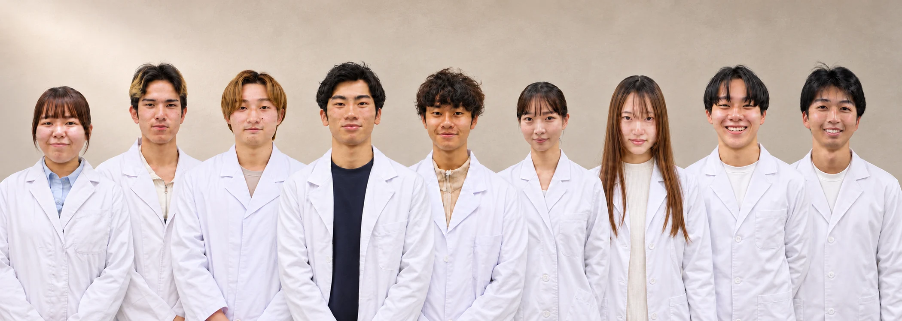
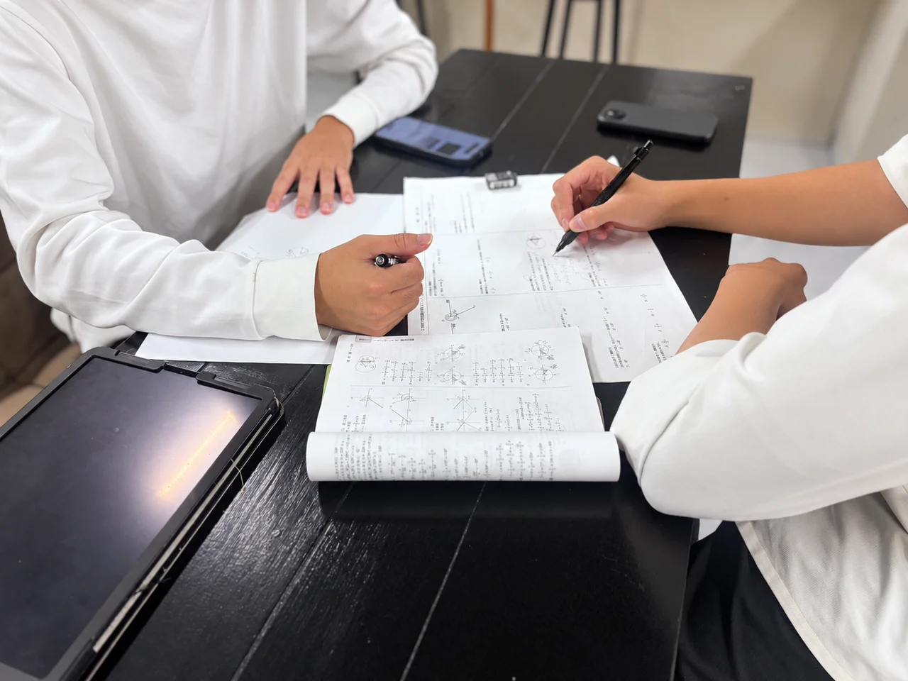

01Medistudyの特徴
勉強をするだけでは、
変わらない。

学習マネジメント・個別指導・
毎日通える空間と質問対応。
勉強する場所と進め方を整え、
分からない問題も一緒に解決します。
Medistudyが目指す学び
成績を伸ばすために必要なのは、分かりやすい授業を受けることだけではありません。
- 勉強する環境を変える。
- 勉強の進め方を変える。
- そして、毎日の学習を変える。
Medistudyは、一人ひとりが自分に合った方法で学び続けられる環境をつくり、日々の学習そのものを変えていく塾です。
宝町校 ｜ 西広島校 ｜ オンライン対応
SCROLL02Medistudyが大切にしていること
成績をつくるのは、
毎日の学習。
授業の時間だけでなく、自習の進め方まで支えます。
一人ひとりが、自分で学習を進められる状態をつくること。
私たちが大切にしていること
塾で授業を受ける時間は、学習時間のほんの一部です。
大切なのは、授業を受けている時間だけではなく、それ以外の時間に、どれだけ自分で学習を進められるか。
- 何を勉強するのか。
- どのように取り組むのか。
- 分からないときに、どう解決するのか。
- そして、それをどう続けていくのか。
Medistudyが大切にしているのは、問題の解き方を教えることだけではありません。
そのために、学習する環境、勉強の進め方、そして日々の習慣まで、学習全体を支えていきます。
03毎日通える学習環境
毎日通える空間で、
勉強を習慣に。
授業がない日も、自習のために通えます。学校帰りや休日に、勉強する場所として使ってください。
- 01
塾に来る。
学校帰りや休日に、学習空間へ。
- 02
自習する。
自分の課題を、自分のペースで進めます。
- 03
講師に質問する。
分からない問題を、一緒に確認します。
質問対応：平日18:00〜22:00
※LIGHTは週3日まで。STANDARD・MANAGEMENTは毎日利用できます。
利用時間｜宝町校・西広島校 共通
- 開校時間
- 7:00〜22:00
- 質問対応時間
- 平日18:00〜22:00
勉強が習慣になる環境について
勉強する場所を、毎日の中に。
- 「今日はやる気が出ない」
- 「家に帰ると、ついスマホを触ってしまう」
- 「部活で疲れて、そのまま寝てしまう」
毎日の勉強を、本人のやる気だけで続けるのは簡単ではありません。
だからMedistudyは、勉強することが当たり前になる環境を大切にしています。
- 学校が終わったら、塾へ行く。
- やるべきことが分かっているから、迷わず勉強を始められる。
- 分からないことがあれば質問する。
- 勉強に迷ったときは相談する。
特別に「今日は頑張ろう」と思わなくても、勉強する場所と、やるべきことが決まっている。
この状態をつくることで、毎日の勉強は少しずつ習慣へ変わっていきます。
- 集中できる場所がある。
- やるべきことが明確になっている。
- 質問できる人がいる。
- 相談できる人がいる。
Medistudyは、勉強を続けるための環境からつくります。
「勉強しなければならない場所」ではなく、
「勉強するのが当たり前の場所」へ。
04学習マネジメント
「今日は何をしよう」
から始めない。
難関の医学部受験を突破した、広島大学医学部医学科の講師がマンツーマンでサポートします。
目標から逆算して学習計画を立て、毎日取り組むべき勉強を明確にします。
週1回の面談で進み具合を振り返り、計画や勉強方法を修正。計画・実行・振り返り・修正を繰り返しながら、毎日の学習を管理していきます。
MANAGEMENTコース週1回の面談で、計画・振り返り・修正。
面談は対面が原則です。オンラインでも対応できます。

- 01
目標から考える
目標から逆算して、今取り組むべき学習を考えます。
- 「次のテストで何点取りたいのか」
- 「どの大学を目指すのか」
- 02
学習を進める
やるべきことが明確になれば、あとは一つずつ取り組む。
分からないことがあれば、質問しながら前に進めます。
- 03
振り返り、改善する
実際に取り組んだ結果をもとに、必要に応じて学習の進め方を見直します。
学習マネジメントの考え方
勉強を始めるたびに、
- 「今日は何をやろう」
- 「どの教材を使おう」
- 「どこまでやればいいんだろう」
と考えていると、それだけで時間は過ぎていきます。
Medistudyでは、目標と現在の学習状況をもとに、今、何をどのように勉強するべきかを整理します。
- 目標から逆算して、やるべきことを考える。
- 実際に取り組む。
- 学習状況や結果を確認する。
- そして、必要に応じて進め方を見直す。
計画を立てることが目的ではありません。
迷わず、毎日の勉強を進められる状態をつくること。
それが、Medistudyの学習マネジメントです。
051対1個別指導
苦手な科目を、
1対1で。
広島大学医学部医学科の講師が、苦手科目や理解度に合わせて指導。自分で考え、自分で解ける理解を目指します。
一人ひとりの理解度に合わせて。
どこでつまずいているかを確認し、問題の考え方を一緒に整理します。答えを覚えるだけでなく、自分で考えて解ける理解を目指します。
※個別指導は、原則月4回以上の受講となります。
個別指導の料金を見る06広島大学医学部医学科の講師陣
勉強してきた人だから、
伝えられることがある。
解き方だけでなく、覚え方・復習の仕方も相談できます。

Medistudyで生徒を支えるのは、広島大学医学部医学科の講師陣です。
受験経験から伝えられること
彼らも最初から、すべてができたわけではありません。
目標を決め、勉強方法を考え、思うように成績が伸びない時期を乗り越えながら、難関の医学部受験を突破してきました。
だからこそ伝えられるのは、問題の解き方だけではありません。
- どうやって覚えたのか。
- どうやって苦手を克服したのか。
- どうやって勉強を続けたのか。
- 成績が伸びないときに、何を変えたのか。
自分自身が試行錯誤してきた経験があるからこそ、生徒一人ひとりの悩みに合わせて、一緒に考えることができます。
勉強方法を相談できる
- 「英単語が覚えられない」
- 「数学をどう復習すればいいか分からない」
そんな日々の勉強についても、自分自身の受験経験を持つ講師と一緒に考えます。
近い距離だから、相談しやすい
年齢の近い大学生だからこそ、学校生活や部活動、受験への不安なども話しやすい。
先生というだけではなく、少し先を歩いてきた先輩として、生徒の学習を支えます。
07分からないを逃さない環境
「分からない」を、
逃さない。
答えを聞くだけでなく、自分で説明し、もう一度解く。自力で解ける理解を目指します。
質問対応時間｜平日18:00〜22:00

- 01
質問する。
- 02
自分で説明する。
- 03
もう一度、自分で解く。
質問から理解までのサポートを見る
勉強していれば、分からない問題は必ず出てきます。
大切なのは、分からないことが出てこないことではなく、分からないままにしないこと。
- 「あとで調べよう」
- 「とりあえず答えを写しておこう」
- 「なんとなく分かった気がする」
そうして残った小さな「分からない」が、少しずつ積み重なっていきます。
Medistudyでは、質問対応時間に分からないことがあれば講師に質問できます。
ただ答えや解き方を教えて、「分かった気がする」で終わらせません。
- どこでつまずいているのか。
- なぜその答えになるのか。
- どう考えれば、自分で解けるのか。
一つずつ整理しながら理解を深め、最後は自分の言葉で説明できるところまで落とし込む。
「先生の説明を聞いたら分かった」ではなく、「自分で考えて、自分で説明できる」状態を目指します。
- 勉強する。
- 分からないことが出てくる。
- 質問する。
- 理解する。
- 自分で説明する。
- もう一度、自分で解く。
ここまで繰り返すことで、「分かったつもり」を、本当の理解へ変えていきます。
分からないを放置しない。
分かったつもりにもさせない。
それが、Medistudyの質問できる環境です。
08MEDI-CYCLE
毎日の積み重ねを、
成長につなげる。
目標を立て、実行し、振り返る。6つのステップで学び方を改善します。
MEDI-CYCLE
- 01
目標
どこを目指すのか決める。
- 02
計画
やるべきことを決める。
- 03
実行
毎日の学習に取り組む。
- 04
理解
分からないを解決する。
- 05
振り返り
結果と学習を振り返る。
- 06
改善
次の学習へつなげる。
目標 → 計画 → 実行 → 理解 → 振り返り → 改善
学習を繰り返し改善する理由
勉強は、一度計画を立てたら終わりではありません。
- 実際にやってみる。
- 分からないところが見つかる。
- 思ったように進まないこともある。
- テストを受けて、初めて気づく課題もあります。
だからMedistudyでは、学習を一度きりの計画ではなく、繰り返し改善していくものだと考えています。
このサイクルを繰り返すことで、毎日の勉強を少しずつ、成果につながる学習へ。
勉強を日常に。
そして、日常の学習を成長につなげる。
09無料体験・学習相談
まずは、Medistudyの学習環境を
体験してください。
- 実際に校舎で勉強してみる。
- 講師に質問してみる。
- 今の勉強について相談してみる。
Medistudyがどんな場所なのか、まずは実際に体験してみてください。
無料体験・学習相談を申し込む公式LINEで相談する